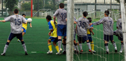

|
Hachioji Park, Saturday 23rd August,
There was a sense of deja vu around the YCAC camp as TML 6 kicked off on saturday. Not so much the fact that we were back at Hachioji with the work shy Jorge* in charge again barely 2 months after we finished TML 5 in the same surroundings. It was the more the last minute phone calls to find a team, the fact that all the gaijin were hungover, that eventually 15 show up and nobody wants to be sub, that Hide is asleep when we get there because hes just played 80 minutes for someone else and the fact that YCAC are almost incapable of threatening the opposition goal other than from inswinging corners.
*The last 2 ycac matches that Jorge has reffed have lasted a total of 65 minutes
We got through it all though and held onto a point. How long we'll hold on to it though, I dont know. 2 strikes before a ball was kicked and Joe hasnt even begun to question Sid's sexual persuasion or imply that Quentin's parents must have been cousins.
We're looking good longer term though. We've cornered the market in Goalkeepers having pre registered 5 of the swine. Good luck if you need one during the season. We've got them all... though could be tempted to swap them all for 1 decent one. We'll throw in Matt Wallace too. He scores 2 goals a season regular as clockwork, year after year. 2 goals without fail. The problem is that hes already got 1/2 of this seasons'.
If you are interested in the match itself, and why on earth would you be?, read Brommys report. Very accurate though Jon Day does absolutely nothing for me personally.
Report by Steve Taw
|